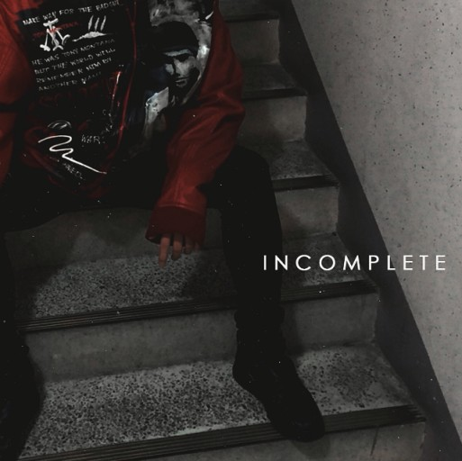
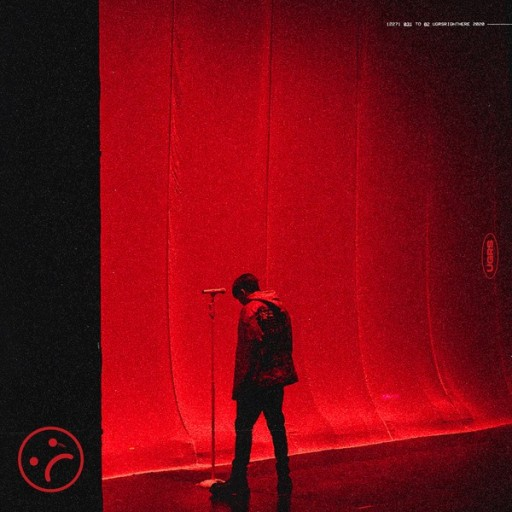
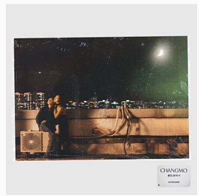

돈벌준비 #DBJB (2013.08.26)
돈벌시간 (2013.12.30)
별될준비 (2014.10.21)
 Incomplete (2015.11.03)
('널 지워야해'가 딩고 killing verse에 나오면서 아는 사람이 많아졌다.)
WELCOME TO MOTOWN (2016.02.01)
(첫 믹스테잎은 19살때 일리네어에 메일을 보낸 후 일리네어 멤버의 도움으로 만든
'우리아가에게쓰는 편지(19살)'이다.)
2.싱글
Gangster (2014.06.10)
담배 (2016.04.22)
'BLUE MOON' with 효린 (2017.04.14)
BOY (2017.09.04)
'No Switchin Sides' with The Quiett, Dok2, Hash Swan (2017.11.16)
'Maserati & Porsche' with 수퍼비 (2018.12.21)
'The Fearless Ones' with 더 콰이엇, 식케이, 빈지노 (2019.05.15)
'PAY DAY with KozyPop' with 정기고, ASH ISLAND (2020.02.27)
 COUNTIN MY GUAP (2020.05.22)
Swoosh Flow Remix (2020.08.03)
 광장동에서 (2020.11.13)
(Motown의 수록곡 'D-Day'도 이 싱글앨범에 같이 발매되었다.)
3.EP
M O T O W N (2016.03.18)
돈 벌 시간 2 (2016.07.21)
(이 앨범을 내고 몇달후 떡상해버리고 말았다..)
돈 벌 시간 3 (2016.12.15)
닿는 순간 (2018.06.11)
BIPOLAR (2020.06.03)
4.정규앨범
Boyhood (2019.11.29)
창모의 첫 정규앨범의 타이틀곡인 'METEOR'가 멜론차트 1위를 달성했고,
수록곡인 '빌었어'가 멜론차트 10위에 올랐었다.
(METEOR가 사재기 의혹을 받자 기분이 상해 듣지 말아달라 부탁..)
 창모의 앨범
창모의 앨범